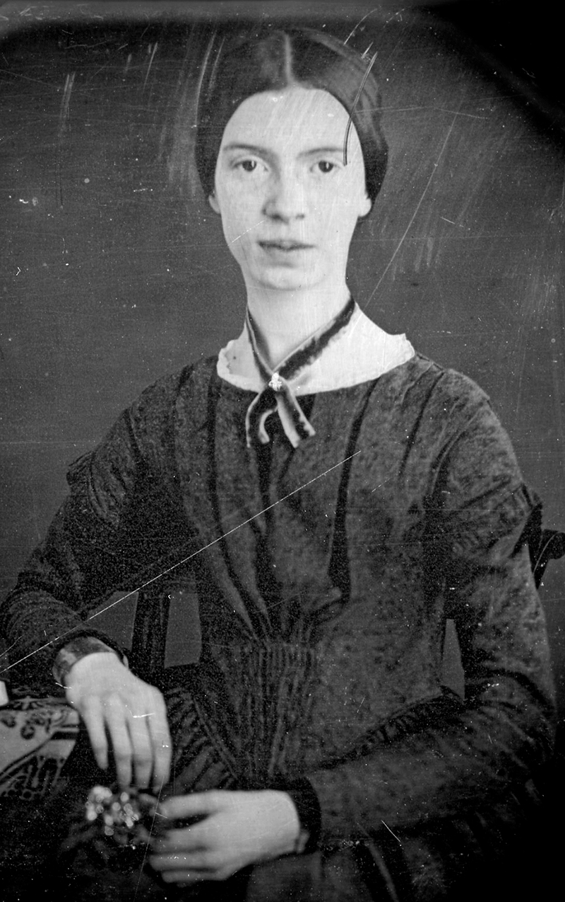

"An enigmatic American poet, unfurls profound emotions and mysteries of existence in her concise and unconventional verses."
Emily Dickinson (1830–1886) remains one of America's most revered poets, known for her distinctive voice and unconventional approach to verse. Born in Amherst, Massachusetts, Dickinson led a reclusive life, producing nearly 1,800 poems, most of which were discovered after her death. Her work explores themes of death, nature, love, and the intricacies of the human psyche.
Dickinson's poems often defy traditional poetic structures, employing dashes and unconventional punctuation. Her brevity and keen observations reflect a deep engagement with the human experience. Though she received little recognition during her lifetime, her unique style and exploration of existential themes have since earned her a place among the most influential American poets. Dickinson's poetry continues to captivate readers with its profound insight, emotional intensity
, and timeless relevance to the complexities of life and consciousness.
